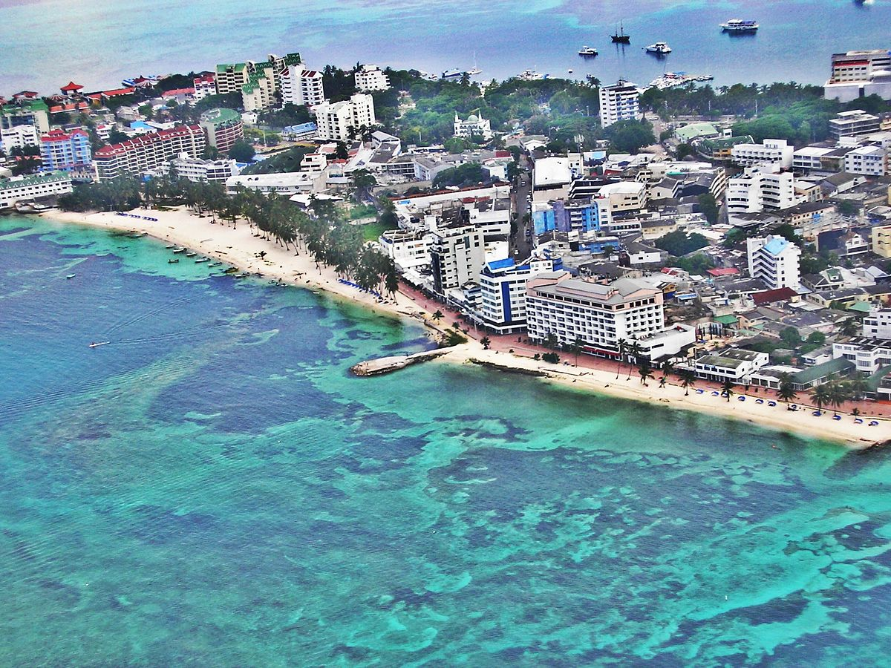

San Andres es una isla colombiana ubicada en el mar Caribe, especificamente en el extremo norte del archipielago de San Andres, Providencia y Santa Catalina. Este archipielago es parte del territorio colombiano y esta situado a aproximadamente 775 kilometros al noroeste de la costa de Colombia continental.